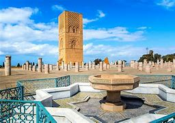
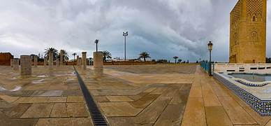

Rabat, capitale du Maroc située dans le Nord du pays, sur la côte atlantique, sur la rive gauche de l'embouchure du Bou Regreg, face à la ville de Salé.
Rabat est le grand centre politique et administratif du pays, où se trouve le palais royal, les instances gouvernementales et les ambassades.
Rabat abrite des quartiers aussi divers que Agdal, Souissi, Ryad (quartiers résidentiels et riches), Océan et Aviation et Yacoub Ben Mansour.
Salé, qui fait partie de la conurbation, est pour sa part une banlieue-dortoir reliée à Rabat par un pont.
Cernée de remparts, la capitale du Royaume possède un important
patrimoine architectural qui compte de nombreux monuments comme les portes de l’enceinte de la Casbah des Oudaïa, le minaret de la mosquée Hassan (XIIe siècle),
qui s’élève à 55 m, un des rares vestiges de cet édifice inachevé et, à proximité de la ville, la nécropole de Chellah.
La ville abrite plusieurs musées
(archéologie, artisanat). Elle est le siège de l’université Mohammed V (1957) et de plusieurs instituts culturels et d’enseignement.
Port important, Rabat est aussi une ville commerciale et industrielle (textiles, denrées alimentaires, matériaux de construction) où le tourisme et l’artisanat local
jouent également un rôle économique majeur.

Images de la ville Rabat :
Bénéficiant d’un climat océanique, l’endroit est aux antipodes de ce que l’on peut imaginer quand on pense aux villes du Maghreb : le thermomètre dépasse rarement
les 25° C durant l’été, ce qui en fait une cité idéale à visiter pour les européens peu habitués aux températures étouffantes.
Mais Rabat, c’est aussi un contraste
saisissant : celui d’une métropole urbaine et branchée affichant une liste impressionnante de monuments, sites culturels et patrimoniaux qu’il sera fort agréable
de contempler.
L’aéroport de Rabat-Salé est un aéroport international marocain situé dans la commune de Salé, à 8 km seulement au nord-est de Rabat : il accueille des vols internationaux
et est particulièrement orienté vers ceux arrivant de France ou d’Espagne continentale. Il est donc aisé d’atterrir au plus près de votre destination pour venir visiter Rabat :
d’ailleurs, notre partenaire Ulysse vous permettra de vous y rendre en vous trouvant un vol, au meilleur prix.
Une fois sur place, il sera plus simple de louer une voiture : pour un prix modique, cela vous permettra vous déplacer librement sans dépendre des bus et taxis,
pas toujours facilement disponibles ni confortables !
Sinon, vous pouvez toujours opter pour un transfert aéroport/Rabat : un chauffeur privé vous récupérera à l’aéroport pour vous déposer au pied de votre hébergement.
Pour plus d'information voici ce lien : Rabat Info